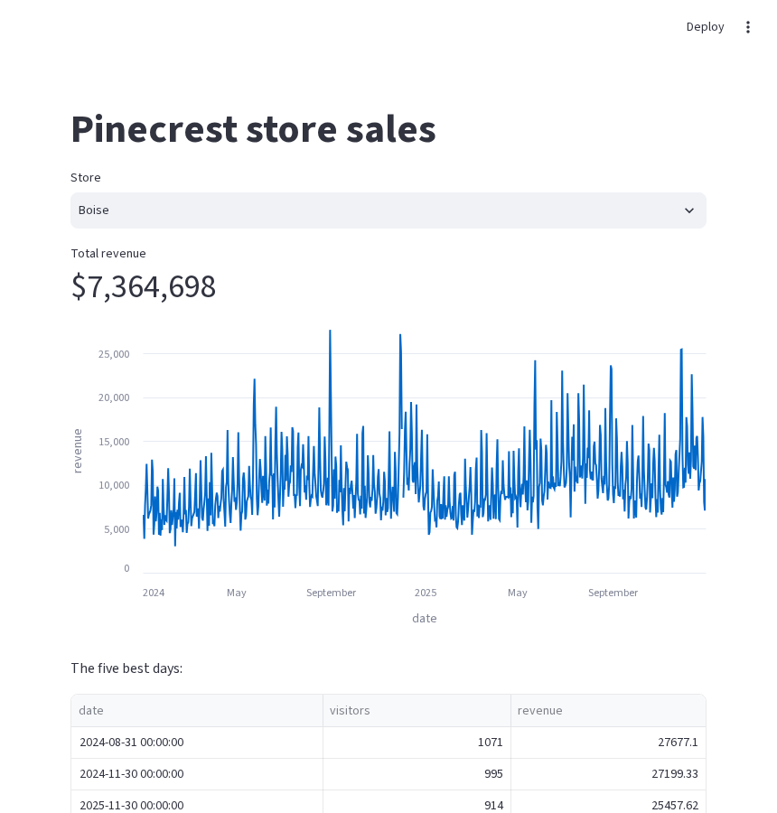
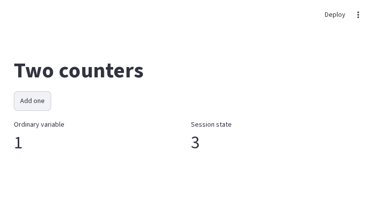
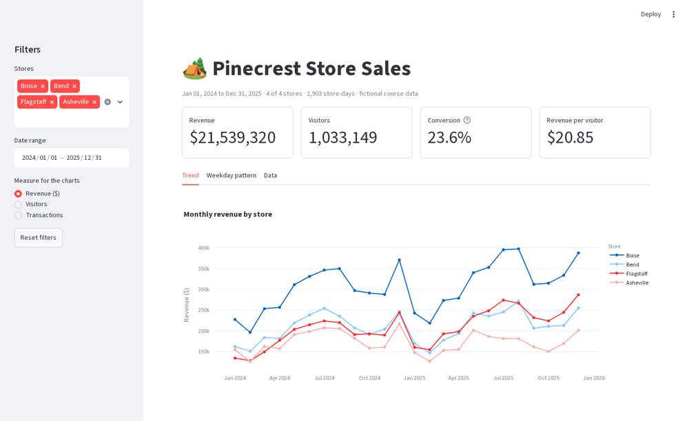
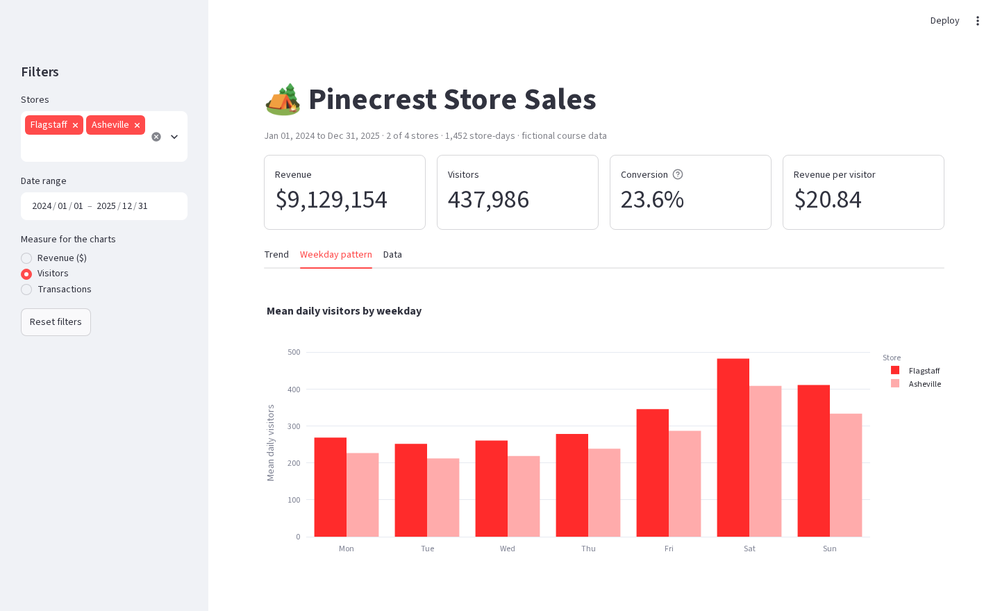

🚦 Lesson 7.4: Dashboards with Streamlit
Turn a Python script into a web app where the controls run your pandas code, and learn the one idea that explains everything Streamlit does: the script reruns.
🎯 Learning Objectives
By the end of this lesson, you will be able to:
- Write a Streamlit app as a plain Python script and run it locally with
streamlit run - Explain the rerun model, and predict what a variable holds after a widget is used
- Keep values across reruns with
st.session_stateand avoid repeated work withst.cache_data - Lay out a dashboard with a sidebar, columns and tabs, showing metrics, charts, a table and a download button
- Test an app without a browser, and describe what it takes to put an app in front of other people
In This Lesson
🧭 From Chart to App
The interactive files you built in the last two lessons have a ceiling. Everything they can show was computed before you saved them, and their controls can only do what a little JavaScript in the browser can do. The moment a colleague asks "can I pick my own date range and get the totals for it?" or "can I download just those rows?", you need controls that run pandas. That means Python has to be running while the reader uses the page.
Streamlit is a library that makes this about as easy as it can be. You write an ordinary Python script. Streamlit turns each call such as st.title(...), st.slider(...) or st.plotly_chart(...) into an element on a web page, and runs a small web server that shows the page in your browser. There is no HTML to write and no JavaScript.
💡 Mental Model: A Spreadsheet That Recalculates
Think of a spreadsheet with an input cell at the top and formulas below it. Change the input and every formula recalculates at once: you never tell the sheet which cells to update. A Streamlit app behaves the same way, except that the "sheet" is your script. Whenever a reader changes any widget, Streamlit runs the whole script again from the first line to the last, with the widget's new value, and replaces what is on the page with the new results.
That one sentence, "the whole script reruns", explains nearly everything in this lesson: why apps are so simple to write, why a plain variable forgets its value, and why caching matters. Keep it in mind.
🤔 Why This Matters
A dashboard changes who can use your analysis. A notebook serves you. A report serves a reader with the question you anticipated. An app serves a reader with their own question, as long as you anticipated the kind of question. Being able to build one in an afternoon, in the language you already use for the analysis, is a practical and well-regarded skill.
| Plotly or Bokeh HTML file | Streamlit app | |
|---|---|---|
| What the reader needs | A browser | A browser, and a way to reach a computer that is running your app |
| Controls can | Show, hide, zoom, select what was already sent | Run any Python: filter, aggregate, refit, query a database |
| Data | Travels inside the file | Stays on the server; the reader sees only what you display |
| Sharing | Send the file | Keep a Python process running somewhere |
🚀 Your First App
Streamlit apps are scripts, not notebooks. Work in an editor such as VS Code, with a terminal open in your pinecrest-analysis folder and the environment active. Create a file named hello.py with this content.
import pandas as pd
import streamlit as st
st.title("Pinecrest store sales")
sales = pd.read_csv("data/daily_sales.csv", parse_dates=["date"])
store = st.selectbox("Store", ["Boise", "Bend", "Flagstaff", "Asheville"])
one = sales[sales["store"] == store]
st.metric("Total revenue", f"${one['revenue'].sum():,.0f}")
st.line_chart(one, x="date", y="revenue")
st.write("The five best days:")
st.dataframe(one.nlargest(5, "revenue")[["date", "visitors", "revenue"]], hide_index=True)Start it from the terminal. Note the command: not python hello.py, but streamlit run.
streamlit run hello.pyTerminal (your addresses will differ)
You can now view your Streamlit app in your browser.
Local URL: http://localhost:8501
Network URL: http://192.168.1.23:8501Your browser opens at the Local URL. (The first time, Streamlit may ask for an email address in the terminal. Press Enter to skip it.)

hello.py running. Twelve lines of Python, no HTML.Now do three things, in this order:
- Change the store in the dropdown. The metric, the chart and the table all update. You wrote no code to connect them: the script reran with
storeequal to the new choice. - Edit the file while the app is running: change the title text and save. The page offers a Rerun button (choose Always rerun to make it automatic). This edit-save-look loop is how you develop a Streamlit app.
- Stop the app by pressing Ctrl+C in the terminal. Reload the browser tab: the page is gone. The page exists only while the Python process runs.
⚠️ The Folder You Start From Matters
The script reads data/daily_sales.csv with a relative path, so run streamlit run from the folder that contains data/, exactly as with any script since Lesson 0.1. A FileNotFoundError shown in red on the page nearly always means the terminal is in the wrong folder.
💡 How the Code on This Page Was Checked
An app needs a running server and a browser, so the app files in this lesson cannot print output under their listings the way earlier lessons did. Each app was run for real, and the screenshots come from those runs. Each was also checked with Streamlit's own testing tool, which you will meet in Testing Without a Browser: those listings do have real output beneath them.
🧰 Showing Things and Asking Things
Almost every Streamlit function does one of two jobs: it shows something, or it asks the reader for something and returns the answer.
Showing
| Function | Shows |
|---|---|
st.title, st.header, st.subheader, st.caption | Headings and small print |
st.markdown("**bold** text") | Formatted text, written in Markdown |
st.write(anything) | A sensible display of whatever you pass: text, a number, a DataFrame, a figure |
st.metric(label, value, delta) | One big number with an optional up or down change |
st.dataframe(df) | A sortable, scrollable table |
st.line_chart, st.bar_chart, st.scatter_chart | Quick built-in charts from a DataFrame |
st.plotly_chart(fig), st.pyplot(fig), st.bokeh_chart(p) | A figure from the libraries you already know |
st.info, st.warning, st.error, st.success | Colored message boxes |
The built-in charts are fine for a first look. For anything you would polish, build the figure with Plotly as in Lesson 7.2 and hand it to st.plotly_chart(fig): hover, zoom and legend clicks all keep working inside the app. Streamlit restyles Plotly figures with its own colors and fonts so that they match the page; pass theme=None to st.plotly_chart to keep the figure exactly as you designed it.
Asking
A widget function draws a control and returns its current value. You use the return value like any other variable. This is the whole interface: there are no event handlers to register for ordinary use.
| Widget | Returns |
|---|---|
st.selectbox(label, options) | The one chosen option |
st.multiselect(label, options, default=...) | A list of the chosen options (possibly empty) |
st.radio(label, options) | The one chosen option |
st.slider(label, min, max, value) | A number, or a pair of numbers if value is a pair |
st.date_input(label, value) | A datetime.date, or a tuple of dates if value is a pair |
st.checkbox(label), st.toggle(label) | True or False |
st.text_input(label), st.number_input(label) | The typed text or number |
st.button(label) | True only on the one rerun caused by the click, otherwise False |
Read the last row twice. A button is not a switch. It reports "I was just clicked" for a single run of the script, and you are about to see why that matters.
🔁 How Reruns Work
Each trip around this loop is called a rerun. Three consequences follow, and each one surprises people once.
- Everything is recomputed. If the script reads a CSV file on line 5, it reads it again on every click of every widget.
- Ordinary variables start from scratch. A variable assigned in the script is assigned again from the top each time. Nothing you computed in the last run is still there.
- Widgets are the exception. Streamlit remembers each widget's value between reruns and hands it back when the script reaches that widget's line.
The classic demonstration is a counter. Save this as counter.py and run it with streamlit run counter.py.
import streamlit as st
st.title("Two counters")
# Counter 1: an ordinary variable
plain = 0
if st.button("Add one"):
plain += 1
# Counter 2: a value kept in session state
st.session_state["kept"] = st.session_state.get("kept", 0) + 1
left, right = st.columns(2)
left.metric("Ordinary variable", plain)
right.metric("Session state", st.session_state.get("kept", 0))
Trace one click. The script reruns. Line 6 sets plain to 0. The button returns True because it was just clicked, so plain becomes 1. On the next click the same thing happens: back to 0, up to 1. The variable never reaches 2 because it never survives the end of a run. The second counter lives in st.session_state, which does survive.
✅ This Is a Feature
Starting from scratch each time is why Streamlit apps are easy to reason about: the page always reflects one clean run of the script with the current widget values, with no leftover state to get out of sync. Most dashboards need nothing else. Widgets in, results out.
🧠 Remembering: Session State
st.session_state is a dictionary that Streamlit keeps for each browser session (each open tab) and preserves across reruns. Use it for the few things that must outlive a run: a counter, the step a user has reached, a list they are building.
if "clicks" not in st.session_state: # runs once per session: set the starting value
st.session_state["clicks"] = 0
st.session_state["clicks"] += 1 # read and write like a dictionary...
st.write(st.session_state.clicks) # ...or like attributesWidgets and Keys
Give a widget a key and its value appears in session state under that name. This is how one part of your script can read a widget defined elsewhere, and how code can set a widget, for example to reset the filters.
import streamlit as st
STORES = ["Boise", "Bend", "Flagstaff", "Asheville"]
def reset():
st.session_state["stores"] = STORES
st.session_state["min_revenue"] = 0
if "stores" not in st.session_state: # first run of this session
reset()
st.multiselect("Stores", STORES, key="stores")
st.slider("Minimum daily revenue ($)", 0, 20000, step=1000, key="min_revenue")
st.button("Reset filters", on_click=reset)
st.write("Showing", st.session_state["stores"], "at or above", st.session_state["min_revenue"])Two details make this work. The starting values are set through session state, so the widgets are created with a key and no default. And the reset happens in a callback: a function passed as on_click, which Streamlit runs before the rerun begins. Changing a widget's value from the main body of the script, after the widget has been drawn in that run, is not allowed, as you will see in Common Mistakes.
💡 Each Visitor Gets Their Own State
Session state belongs to one browser tab. Two colleagues using your app at the same time each have their own filters and counters, and neither sees the other's. Open your app in a second tab to try it.
⚡ Not Repeating Work: st.cache_data
Consequence 1 of the rerun model was that everything is recomputed. Reading a small CSV takes a few milliseconds and nobody notices. Reading a large file, running a slow query, or calling an API on every click of every widget makes an app painful. The fix is one line above the function. That line is a decorator, the @name syntax from Intermediate Python that wraps the function defined beneath it.
import time
import pandas as pd
import streamlit as st
@st.cache_data
def load_sales(path):
time.sleep(2) # stand-in for a slow file or query
st.session_state["loads"] = st.session_state.get("loads", 0) + 1
return pd.read_csv(path, parse_dates=["date"])
started = time.perf_counter()
sales = load_sales("data/daily_sales.csv")
elapsed = time.perf_counter() - started
store = st.selectbox("Store", ["Boise", "Bend", "Flagstaff", "Asheville"])
st.metric("Total revenue", f"${sales.loc[sales['store'] == store, 'revenue'].sum():,.0f}")
st.caption(f"This run took {elapsed:.2f} seconds to get the data. "
f"The function body has run {st.session_state.get('loads', 0)} time(s).")Run it and change the store a few times. The first run waits two seconds. Every later run is instant, and the caption keeps saying the body has run once.
@st.cache_data wraps the function so that Streamlit remembers its result. On each call it looks at the arguments (and the function's code). If it has already computed the result for those arguments, it returns a copy of the stored result and skips the body entirely. If the arguments are new, or you edited the function, it runs the body and stores the new result.
| You write | Meaning |
|---|---|
@st.cache_data | Keep results until the app restarts or the cache is cleared |
@st.cache_data(ttl=3600) | Keep each result for at most an hour, then recompute: for data that changes |
@st.cache_data(show_spinner="Loading sales...") | Custom text shown while the body runs |
load_sales.clear() | Forget the stored results of this function, for a "Refresh data" button |
@st.cache_resource | A different decorator, for things that must not be copied: a database connection, a loaded model |
⚠️ What to Cache, and What Not To
Cache the slow steps that do not depend on the widgets: loading files, querying a database, expensive preparation. Do not wrap the whole app in a cached function, and do not put widgets inside one. Filtering a DataFrame that is already in memory is fast; leave it uncached so that it always reflects the current widget values. And unlike session state, the cache is shared by all users of the app, so never cache something that is private to one person.
📐 Layout
By default, elements stack down the page in the order your script creates them. Four containers cover almost every dashboard.
| Container | Use it for |
|---|---|
st.sidebar | Filters and settings, in a panel on the left that the reader can collapse |
st.columns(n) or st.columns([2, 1]) | Things side by side: a row of metrics, a chart next to a table. A list gives relative widths |
st.tabs(["Trend", "Data"]) | Alternative views of the same filtered data |
st.expander("Details") | Material most readers can skip: method notes, raw data |
Each can be used two ways: as a with block, or by calling display methods on the object.
st.set_page_config(page_title="Pinecrest Store Sales", layout="wide") # must be the first st call
with st.sidebar: # everything inside goes in the sidebar
store = st.selectbox("Store", STORES)
left, right = st.columns(2)
left.metric("Revenue", "$7,364,698") # method style
with right: # with style
st.metric("Visitors", "352,716")
tab_trend, tab_data = st.tabs(["Trend", "Data"])
with tab_trend:
st.plotly_chart(fig, width="stretch") # fill the width of the container
with tab_data:
st.dataframe(view, hide_index=True)
with st.expander("About this data"):
st.write("Register totals for the four Pinecrest stores. Fictional course data.")layout="wide" lets the app use the full browser width, which dashboards usually want. width="stretch" on a chart or table makes it fill its container. (Older code uses use_container_width=True for this. That argument is deprecated: Streamlit asks you to replace it with width.)
💡 Tabs Do Not Save Work
The content of every tab is computed on every rerun, whether or not it is the one in front. Tabs organize the page; they do not skip code. The same is true of a collapsed expander.
A Download Button
st.download_button sends the reader a file made from data in your script. Convert the DataFrame to CSV text and pass it as data.
st.download_button(
"Download these rows as CSV",
data=view.to_csv(index=False),
file_name="pinecrest_filtered.csv",
mime="text/csv",
)Whatever the filters currently select is what gets downloaded, which is the request that started this lesson.
🧪 Testing Without a Browser
Streamlit ships a testing tool, AppTest, that runs an app script in memory, with no server and no browser, and lets ordinary Python inspect the page and operate the widgets. It is the fastest way to check that an app has no errors, and it makes the rerun model visible. Run the listings in this section in a notebook or a script, in the folder that holds your app files.
from streamlit.testing.v1 import AppTest
at = AppTest.from_file("hello.py", default_timeout=30).run()
print("errors:", len(at.exception))
print("title:", at.title[0].value)
print("store:", at.selectbox[0].value)
print("metric:", at.metric[0].label, "=", at.metric[0].value)Output
errors: 0
title: Pinecrest store sales
store: Boise
metric: Total revenue = $7,364,698.run() executes the script once, like opening the page. Elements are found by type and position: at.selectbox[0] is the first selectbox. Now act as the reader: choose another store, and rerun.
at.selectbox[0].select("Asheville").run()
print("store:", at.selectbox[0].value)
print("metric:", at.metric[0].label, "=", at.metric[0].value)Output
store: Asheville
metric: Total revenue = $4,140,977The counter app shows the rerun model in numbers. Click the button three times and read both metrics after each click.
at = AppTest.from_file("counter.py", default_timeout=30).run()
print("start plain:", at.metric[0].value, " kept:", at.metric[1].value)
for click in range(1, 4):
at.button[0].click().run()
print(f"click {click} plain:", at.metric[0].value, " kept:", at.metric[1].value)Output
start plain: 0 kept: 0
click 1 plain: 1 kept: 1
click 2 plain: 1 kept: 2
click 3 plain: 1 kept: 3And the cache app: three runs, one execution of the slow function body.
import time
at = AppTest.from_file("cache_demo.py", default_timeout=30)
for store in ["Boise", "Bend", "Flagstaff"]:
started = time.perf_counter()
at.run()
if store != "Boise":
at.selectbox[0].select(store).run()
seconds = time.perf_counter() - started
print(f"{store:<10} {at.metric[0].value:>12} run took about {round(seconds)} s body runs: {at.session_state['loads']}")Output
Boise $7,364,698 run took about 2 s body runs: 1
Bend $5,045,467 run took about 0 s body runs: 1
Flagstaff $4,988,177 run took about 0 s body runs: 1Finally the reset pattern: change both widgets, press the button, and the callback restores them.
at = AppTest.from_file("reset_demo.py", default_timeout=30).run()
at.multiselect[0].set_value(["Bend"])
at.slider[0].set_value(5000).run()
print("changed:", at.multiselect[0].value, at.slider[0].value)
at.button[0].click().run()
print("reset: ", at.multiselect[0].value, at.slider[0].value)Output
changed: ['Bend'] 5000
reset: ['Boise', 'Bend', 'Flagstaff', 'Asheville'] 0✅ A Five-Line Safety Net
AppTest.from_file("app.py").run() followed by assert not at.exception is a complete, useful test. It catches the most common way apps break: an edit that raises an error on some path you did not click through by hand. You will add one to the project.
🌐 Running Locally and Deploying
On Your Own Computer
streamlit run app.py starts a web server on your machine. For many purposes that is the whole deployment: you run the app during a meeting and share your screen, or you use it yourself as a tool.
| Command or address | What it does |
|---|---|
streamlit run app.py | Starts the app and opens a browser tab |
http://localhost:8501 | The Local URL: works only on your computer |
| The Network URL | Works for other devices on the same local network (your home or office Wi-Fi), while your computer is on and the app is running, if your firewall allows it |
streamlit run app.py --server.port 8502 | Uses another port, for running two apps at once |
streamlit run app.py --server.headless true | Starts without opening a browser: the form used on servers |
| Ctrl+C in the terminal | Stops the app |
What "Deploying" Involves
To let other people use the app when your laptop is closed, the app must run on a computer that stays on and that they can reach. Whatever route you choose, the same six things have to be true. Understanding them is more useful than memorizing any one provider's buttons.
- A machine that runs Python continuously. A server in your organization, a virtual machine you rent, a container platform, or a hosting service built for Python web apps. Several such services have free tiers for small public apps, and none is required: an app is a normal Python program.
- The same packages. The machine installs from your
requirements.txt. Pin versions, as Lesson 0.1 did, so the server runs what you tested. List only what the app imports. - The code and the data. The script plus every file it reads, at the same relative paths, or a connection to wherever the data lives (a database, an API).
- A start command. Usually
streamlit run dashboard.py --server.headless true --server.port 8501 --server.address 0.0.0.0. The address0.0.0.0means "accept connections from other machines", where the default accepts only local ones. - A way in. A URL, and a decision about who may open it. Streamlit has no login screen by default. If the app shows anything that is not public, put it behind your organization's sign-in, a private network, or the access controls of your hosting service.
- Secrets kept out of the code. Database passwords and API keys go in environment variables or in Streamlit's secrets file (
.streamlit/secrets.toml, read withst.secrets["name"]), which you never commit to version control. This is the rule from Lesson 6.4, applied to apps.
🛑 Before Anyone Else Can Open It
Deploying turns your analysis into a published thing. Check three points first. Data: does the app display or let people download anything personal or confidential? Aggregate, or leave it out. Access: who can reach the URL? "Nobody knows the link" is not access control. Cost and load: every open tab is a session using memory on your server, and each rerun is real computation. Cache the heavy steps, and do not let a widget trigger an unbounded query.
💡 A Sensible Path
Start local. Show the app on your own screen and collect reactions: you will change it a lot in the first week. Deploy only when people ask to use it without you. When that day comes, ask whoever runs systems where you work how internal web apps are normally hosted, before picking a service on your own.
⚠️ Common Mistakes
1. Starting the App with python
python hello.pyWARNING streamlit.runtime.scriptrunner_utils.script_run_context: Thread 'MainThread':
missing ScriptRunContext! This warning can be ignored when running in bare mode.What it means: the script ran as an ordinary program, with no server and no page, so every st. call had nowhere to draw. The terminal fills with warnings like this one and then the program ends. Fix: streamlit run hello.py.
2. Expecting a Variable to Remember
The counter from How Reruns Work, in its shortest form. There is no error, only a number that will not grow.
at = AppTest.from_string("""
import streamlit as st
total = 0
if st.button("Add 10"):
total += 10
st.write("Total:", total)
""").run()
for _ in range(3):
at.button[0].click().run()
print(at.markdown[-1].value)Output
Total: `10`Fix: keep the value in st.session_state.
3. Two Identical Widgets
at = AppTest.from_string("""
import streamlit as st
first = st.selectbox("Store", ["Boise", "Bend"])
second = st.selectbox("Store", ["Boise", "Bend"])
""").run()
print(at.exception[0].message.split(". ")[0] + ".")Output
There are multiple `selectbox` elements with the same auto-generated ID.What it means: Streamlit identifies a widget by its type and arguments, and these two are indistinguishable, so it could not tell whose value is whose. In the browser this appears as a red error box on the page. Fix: give each a different label, or a unique key: st.selectbox("Store", ..., key="store_b").
4. Setting a Widget's Value After It Has Been Drawn
at = AppTest.from_string("""
import streamlit as st
st.slider("Minimum revenue", 0, 20000, key="min_revenue")
if st.button("Reset"):
st.session_state["min_revenue"] = 0
""").run()
at.button[0].click().run()
print(at.exception[0].message.split(". ")[0] + ".")Output
`st.session_state['min_revenue']` cannot be modified after the widget with that key is instantiated.What it means: by the time the script reached the assignment, the slider for this run already existed. Fix: change widget values in a callback (st.button("Reset", on_click=reset)), which runs before the script does, as in reset_demo.py.
5. A Half-Chosen Date Range
import datetime as dt
at = AppTest.from_string("""
import datetime as dt
import streamlit as st
dates = st.date_input("Range", value=(dt.date(2025, 1, 1), dt.date(2025, 12, 31)))
start, end = dates
st.write(start, end)
""").run()
at.date_input[0].set_value((dt.date(2025, 3, 1),)).run() # the reader has clicked a start date only
print(at.exception[0].message)Output
not enough values to unpack (expected 2, got 1)What it means: this is a ValueError. When a reader picks a new range, there is a moment after the first click when the widget holds one date, and the script reruns right then. Unpacking one value into two names fails, and the page flashes an error. Fix: check the length first, and stop the run politely until the range is complete: if len(dates) != 2: st.info("Pick an end date."); st.stop(). The project does this.
6. Loading Data on Every Rerun
No error, only an app that feels slower with every widget you add. If pd.read_csv, a database query or an API call sits in the main body of the script, it repeats on every interaction. Fix: move it into a function decorated with @st.cache_data.
🛠️ Project: The Pinecrest Sales Dashboard
Build the app the regional manager asked for: choose stores and a date range, see the key numbers for that selection, look at the trend and the weekly pattern, and download the rows. Work in one file, dashboard.py, and keep the app running in a browser tab while you build, saving after each step to see it grow. The steps below show the pieces. The complete file is in Step 6. Allow about 45 minutes.
🛠️ Step 1: Page setup and cached loading (6 min)
Page configuration first, then constants, then the data function. Loading and preparing the data is the only slow step, and it does not depend on any widget, so it is cached.
import pandas as pd
import plotly.express as px
import streamlit as st
st.set_page_config(page_title="Pinecrest Store Sales", page_icon="🏕️", layout="wide")
STORES = ["Boise", "Bend", "Flagstaff", "Asheville"]
DAYS = ["Mon", "Tue", "Wed", "Thu", "Fri", "Sat", "Sun"]
MEASURES = {"revenue": "Revenue ($)", "visitors": "Visitors", "transactions": "Transactions"}
@st.cache_data
def load_sales(path):
sales = pd.read_csv(path, parse_dates=["date"])
sales["weekday"] = sales["date"].dt.day_name().str[:3]
sales["month"] = sales["date"].dt.to_period("M").dt.to_timestamp()
return sales
sales = load_sales("data/daily_sales.csv")
FIRST_DAY, LAST_DAY = sales["date"].min().date(), sales["date"].max().date()🛠️ Step 2: Filters in the sidebar, with a reset (9 min)
Three widgets with keys, starting values set through session state, and a reset callback: the pattern from reset_demo.py.
def reset_filters():
st.session_state["stores"] = STORES
st.session_state["dates"] = (FIRST_DAY, LAST_DAY)
st.session_state["measure"] = "revenue"
if "stores" not in st.session_state:
reset_filters()
with st.sidebar:
st.header("Filters")
stores = st.multiselect("Stores", STORES, key="stores")
dates = st.date_input("Date range", min_value=FIRST_DAY, max_value=LAST_DAY, key="dates")
measure = st.radio("Measure for the charts", list(MEASURES), format_func=MEASURES.get, key="measure")
st.button("Reset filters", on_click=reset_filters)🛠️ Step 3: Filter, and handle the awkward cases (7 min)
Two situations would otherwise produce an error or an empty chart: a half-chosen date range and no store selected. st.stop() ends the current run cleanly after showing a message.
st.title("🏕️ Pinecrest Store Sales")
if len(dates) != 2:
st.info("Pick an end date to complete the range.")
st.stop()
start, end = dates
view = sales[sales["store"].isin(stores) & sales["date"].between(pd.Timestamp(start), pd.Timestamp(end))]
if view.empty:
st.warning("No rows match these filters. Choose at least one store.")
st.stop()
st.caption(f"{start:%b %d, %Y} to {end:%b %d, %Y} · {len(stores)} of {len(STORES)} stores · "
f"{len(view):,} store-days · fictional course data")🛠️ Step 4: Four metrics in a row (6 min)
revenue = view["revenue"].sum()
visitors = int(view["visitors"].sum())
transactions = int(view["transactions"].sum())
k1, k2, k3, k4 = st.columns(4)
k1.metric("Revenue", f"${revenue:,.0f}", border=True)
k2.metric("Visitors", f"{visitors:,}", border=True)
k3.metric("Conversion", f"{transactions / visitors:.1%}", border=True,
help="Transactions divided by visitors")
k4.metric("Revenue per visitor", f"${revenue / visitors:.2f}", border=True)🛠️ Step 5: Tabs with charts, table and download (10 min)
The charts are the Plotly Express calls you know, drawn from the filtered view and using whichever measure the reader chose.
tab_trend, tab_week, tab_data = st.tabs(["Trend", "Weekday pattern", "Data"])
with tab_trend:
monthly = view.groupby(["store", "month"], as_index=False)[measure].sum()
fig = px.line(monthly, x="month", y=measure, color="store", markers=True,
category_orders={"store": STORES},
labels={"month": "", measure: MEASURES[measure], "store": "Store"},
title=f"Monthly {measure} by store")
fig.update_layout(hovermode="x unified")
st.plotly_chart(fig, width="stretch")
with tab_week:
by_day = view.groupby(["store", "weekday"], as_index=False)[measure].mean()
fig = px.bar(by_day, x="weekday", y=measure, color="store", barmode="group",
category_orders={"weekday": DAYS, "store": STORES},
labels={"weekday": "", measure: f"Mean daily {measure}", "store": "Store"},
title=f"Mean daily {measure} by weekday")
st.plotly_chart(fig, width="stretch")
with tab_data:
table = view[["date", "store", "visitors", "transactions", "units", "revenue", "promo_day"]]
st.dataframe(table, hide_index=True, width="stretch")
st.download_button("Download these rows as CSV", data=table.to_csv(index=False),
file_name="pinecrest_filtered.csv", mime="text/csv")🛠️ Step 6: The complete app (2 min)
Here is the whole of dashboard.py, in order. Compare it with yours, then run streamlit run dashboard.py.
"""Pinecrest store sales dashboard. Run with: streamlit run dashboard.py"""
import pandas as pd
import plotly.express as px
import streamlit as st
st.set_page_config(page_title="Pinecrest Store Sales", page_icon="🏕️", layout="wide")
STORES = ["Boise", "Bend", "Flagstaff", "Asheville"]
DAYS = ["Mon", "Tue", "Wed", "Thu", "Fri", "Sat", "Sun"]
MEASURES = {"revenue": "Revenue ($)", "visitors": "Visitors", "transactions": "Transactions"}
@st.cache_data
def load_sales(path):
sales = pd.read_csv(path, parse_dates=["date"])
sales["weekday"] = sales["date"].dt.day_name().str[:3]
sales["month"] = sales["date"].dt.to_period("M").dt.to_timestamp()
return sales
sales = load_sales("data/daily_sales.csv")
FIRST_DAY, LAST_DAY = sales["date"].min().date(), sales["date"].max().date()
def reset_filters():
st.session_state["stores"] = STORES
st.session_state["dates"] = (FIRST_DAY, LAST_DAY)
st.session_state["measure"] = "revenue"
if "stores" not in st.session_state:
reset_filters()
# ---- Sidebar: filters -------------------------------------------------------
with st.sidebar:
st.header("Filters")
stores = st.multiselect("Stores", STORES, key="stores")
dates = st.date_input("Date range", min_value=FIRST_DAY, max_value=LAST_DAY, key="dates")
measure = st.radio("Measure for the charts", list(MEASURES), format_func=MEASURES.get, key="measure")
st.button("Reset filters", on_click=reset_filters)
# ---- Filter the data --------------------------------------------------------
st.title("🏕️ Pinecrest Store Sales")
if len(dates) != 2:
st.info("Pick an end date to complete the range.")
st.stop()
start, end = dates
view = sales[sales["store"].isin(stores) & sales["date"].between(pd.Timestamp(start), pd.Timestamp(end))]
if view.empty:
st.warning("No rows match these filters. Choose at least one store.")
st.stop()
st.caption(f"{start:%b %d, %Y} to {end:%b %d, %Y} · {len(stores)} of {len(STORES)} stores · "
f"{len(view):,} store-days · fictional course data")
# ---- Key numbers ------------------------------------------------------------
revenue = view["revenue"].sum()
visitors = int(view["visitors"].sum())
transactions = int(view["transactions"].sum())
k1, k2, k3, k4 = st.columns(4)
k1.metric("Revenue", f"${revenue:,.0f}", border=True)
k2.metric("Visitors", f"{visitors:,}", border=True)
k3.metric("Conversion", f"{transactions / visitors:.1%}", border=True,
help="Transactions divided by visitors")
k4.metric("Revenue per visitor", f"${revenue / visitors:.2f}", border=True)
# ---- Charts, table, download ------------------------------------------------
tab_trend, tab_week, tab_data = st.tabs(["Trend", "Weekday pattern", "Data"])
with tab_trend:
monthly = view.groupby(["store", "month"], as_index=False)[measure].sum()
fig = px.line(monthly, x="month", y=measure, color="store", markers=True,
category_orders={"store": STORES},
labels={"month": "", measure: MEASURES[measure], "store": "Store"},
title=f"Monthly {measure} by store")
fig.update_layout(hovermode="x unified")
st.plotly_chart(fig, width="stretch")
with tab_week:
by_day = view.groupby(["store", "weekday"], as_index=False)[measure].mean()
fig = px.bar(by_day, x="weekday", y=measure, color="store", barmode="group",
category_orders={"weekday": DAYS, "store": STORES},
labels={"weekday": "", measure: f"Mean daily {measure}", "store": "Store"},
title=f"Mean daily {measure} by weekday")
st.plotly_chart(fig, width="stretch")
with tab_data:
table = view[["date", "store", "visitors", "transactions", "units", "revenue", "promo_day"]]
st.dataframe(table, hide_index=True, width="stretch")
st.download_button("Download these rows as CSV", data=table.to_csv(index=False),
file_name="pinecrest_filtered.csv", mime="text/csv")

🛠️ Step 7: Test it (5 min)
Click through the app by hand first: empty the store list, pick a new date range slowly, press Reset, download the CSV and open it. Then run this check from a notebook or script. It drives the app through the cases most likely to break.
at = AppTest.from_file("dashboard.py", default_timeout=30).run()
assert not at.exception
print("all stores :", [(m.label, m.value) for m in at.metric])
at.sidebar.multiselect[0].set_value(["Asheville"]).run()
assert not at.exception
print("Asheville :", at.metric[0].value, "|", at.caption[0].value)
at.sidebar.multiselect[0].set_value([]).run() # no stores at all
print("no stores :", at.warning[0].value, "| metrics shown:", len(at.metric))
at.sidebar.button[0].click().run() # reset
at.sidebar.date_input[0].set_value((dt.date(2025, 7, 1),)).run() # half a date range
print("half range :", at.info[0].value, "| errors:", len(at.exception))
at.sidebar.date_input[0].set_value((dt.date(2025, 7, 1), dt.date(2025, 7, 31)))
at.sidebar.radio[0].set_value("visitors").run()
print("July 2025 :", at.metric[1].label, at.metric[1].value, "| errors:", len(at.exception))Output
all stores : [('Revenue', '$21,539,320'), ('Visitors', '1,033,149'), ('Conversion', '23.6%'), ('Revenue per visitor', '$20.85')]
Asheville : $4,140,977 | Jan 01, 2024 to Dec 31, 2025 · 1 of 4 stores · 727 store-days · fictional course data
no stores : No rows match these filters. Choose at least one store. | metrics shown: 0
half range : Pick an end date to complete the range. | errors: 0
July 2025 : Visitors 54,116 | errors: 0✅ Project Completion Checklist
streamlit run dashboard.pyopens the app with no red error boxes- Changing stores, dates or the measure updates the metrics and both charts
- Emptying the store list shows a friendly warning, not an error
- Choosing a new date range never flashes an error between the two clicks
- Reset filters restores all three widgets
- The downloaded CSV contains exactly the rows shown in the Data tab
- The
AppTestcheck runs with no assertion error
🏋️ Hands-on Exercises
Exercises 1 to 3 change dashboard.py. Make a copy first (dashboard_v2.py) so that the project version keeps working. The solutions show the lines to add, and each was added to the app and run.
🏋️ Exercise 1: A Weekend Filter
Add a toggle to the sidebar, "Weekends only". When it is on, the dashboard should use only Saturdays and Sundays.
💡 Hint
st.toggle returns True or False. Filter view once more after it is created, before the emptiness check.
✅ Solution
# in the sidebar block
weekends_only = st.toggle("Weekends only", key="weekends_only")
# after `view = ...`
if weekends_only:
view = view[view["weekday"].isin(["Sat", "Sun"])]
# in reset_filters()
st.session_state["weekends_only"] = FalseBecause the toggle has a key, the reset function can switch it off with the other filters.
🏋️ Exercise 2: Compare with the Previous Period
Give the Revenue metric a delta: the percentage change against the period of the same length immediately before the selected range, for the same stores. Show no delta when the previous period falls before the data starts.
💡 Hint
The length is end - start (a timedelta). The previous period ends the day before start. st.metric(..., delta="+4.2%") colors a string that starts with a minus sign red and others green.
✅ Solution
prev_end = start - pd.Timedelta(days=1)
prev_start = prev_end - (end - start)
delta = None
if prev_start >= FIRST_DAY:
previous = sales[sales["store"].isin(stores)
& sales["date"].between(pd.Timestamp(prev_start), pd.Timestamp(prev_end))]
delta = f"{revenue / previous['revenue'].sum() - 1:+.1%} vs previous period"
k1.metric("Revenue", f"${revenue:,.0f}", delta=delta, border=True)Be careful what such a number is taken to mean. With seasonal data, "July against June" mostly measures the season. A comparison with the same dates one year earlier is often the fairer one, and makes a good follow-up change. If you also added the weekend toggle from Exercise 1, apply the same weekend filter to previous, or the two periods are not comparable.
🏋️ Exercise 3: Explain the Numbers
Add an expander under the metrics, "About these numbers", that says where the data comes from, how conversion is calculated, and how many of the selected store-days have a missing revenue value.
💡 Hint
view["revenue"].isna().sum() counts them. st.markdown accepts a multi-line f-string with Markdown bullets.
✅ Solution
with st.expander("About these numbers"):
missing = int(view["revenue"].isna().sum())
st.markdown(f"""
- **Source:** daily register totals for the four Pinecrest stores (fictional course data).
- **Conversion** is transactions divided by visitors counted at the door.
- **Missing values:** {missing} of the {len(view):,} selected store-days have no revenue recorded.
They count as zero in the revenue total, so it is slightly understated.
""")A dashboard that states its own caveats earns more trust than one that looks precise. This is the habit from Module 4, carried into an app.
🏋️ Exercise 4: Predict, Then Test (Stretch)
Without running it, predict what this app shows after the reader clicks Next twice and then Back once. Then check your prediction with AppTest.
import streamlit as st
if "step" not in st.session_state:
st.session_state["step"] = 1
def move(amount):
st.session_state["step"] = max(1, st.session_state["step"] + amount)
left, right = st.columns(2)
left.button("Back", on_click=move, args=(-1,))
right.button("Next", on_click=move, args=(1,))
visits = 0
visits += 1
st.write(f"Step {st.session_state['step']}, visits {visits}")💡 Hint
Which of the two numbers lives in session state? What happens to the other one at the start of every rerun?
✅ Solution
at = AppTest.from_file("steps.py", default_timeout=30).run()
print(at.markdown[0].value)
for label in ["Next", "Next", "Back"]:
next(b for b in at.button if b.label == label).click().run()
print(label, "->", at.markdown[0].value)Output
Step 1, visits 1
Next -> Step 2, visits 1
Next -> Step 3, visits 1
Back -> Step 2, visits 1step is in session state and is changed by callbacks, so it moves 1, 2, 3, 2. visits is an ordinary variable: set to 0 and raised to 1 on every rerun, it always shows 1. To count visits you would keep that in session state too.
🎯 Quick Quiz
🎯 Check Your Understanding
Question 1: A reader moves a slider in your Streamlit app. What happens next?
Question 2: An app contains the lines below. The reader clicks the button three times. What number is displayed?
total = 0
if st.button("Add 10"):
total += 10
st.write("Total:", total)Question 3: load_sales(path) is decorated with @st.cache_data. The app has been open for a while and a reader changes a filter. What does the call load_sales("data/daily_sales.csv") do on that rerun?
Question 4: A colleague in another city wants to use your dashboard next week while you are on vacation. What has to be true?
Question 5: Which request most clearly calls for a Streamlit app, not a standalone Plotly or Bokeh HTML file?
❓ Common Questions at This Stage
Can I build a Streamlit app in a Jupyter notebook?
No. Streamlit runs .py scripts with its own server, and st. calls do nothing useful in a notebook cell. The common workflow is to explore in a notebook until you know what you want to show, then move the working code into a script and wrap it with widgets. Your functions can be shared: put them in a module and import it from both.
Is rerunning the whole script not terribly slow?
Less than you would think. Filtering and grouping a few hundred thousand rows in pandas takes milliseconds, and the slow parts (loading, querying) are cached. If one part of a page is expensive and independent of the rest, Streamlit can rerun just that part: look up st.fragment. And st.form groups several widgets so that the script reruns once, when the reader presses Submit, instead of after every change.
How many people can use my app at once?
Each open tab is a session on your server, each with its own state, all sharing the cached data. A small server handles a team comfortably if the heavy work is cached. An app is not the right tool for thousands of simultaneous public users or for data too big for memory. At that point the conversation is about databases and proper web services, which is beyond this course.
Do I need a paid service to share an app?
No. Streamlit is an open-source library, and an app is a Python program you can run anywhere Python runs: your laptop for a demo, a machine on your office network, a server your organization already has. Hosting services exist and some are free for small public apps, but they are a convenience, not a requirement. What you cannot avoid is that some computer must keep the app running.
When should I not build a dashboard?
When the audience has one question and you already know the answer. A dashboard hands the analysis to the reader, which is helpful when their questions vary and unhelpful when they wanted a conclusion. Often the right deliverable is a short written finding with one chart, which is what the capstone asks for, with an app as an optional extra.
🌟 Going Further: Bonus Challenge
Split the dashboard into two pages. Streamlit builds navigation from st.Page and st.navigation: one page for the store view you built, and a second for the customer survey (data/survey.csv) with a store filter, the mean of each satisfaction rating, and a chart of the share of each rating. Put the shared load_... functions in a separate module and import them in both pages. Write an AppTest check for the new page.
📓 Learning Journal
Take five minutes to write in your learning journal (the journal.md file you started in Lesson 0.1, or a paper notebook). Jot down:
- Key concepts you learned today
- Techniques that clicked (and the ones that have not, yet)
- Questions or confusion to come back to
- Ideas to try on your own
- Progress and feelings: how did this lesson go for you?
✍️ This lesson's prompt: You have now made four kinds of deliverable from the same sales data: a static figure (7.1), an interactive file (7.2), a linked explorer (7.3) and an app (7.4). For each, name one real person or situation it would suit best, and one where it would be the wrong choice.
📝 Lesson Summary
🎓 Key Takeaways
- A Streamlit app is a Python script started with
streamlit run. Display functions put elements on the page; widget functions return the reader's choice. - Any widget change reruns the whole script from the top. Ordinary variables start over; widgets keep their values.
st.session_stateholds what must survive reruns, per browser tab. Widgets with akeylive there, and callbacks (on_click) are the place to change them.@st.cache_datastores a function's result per set of arguments, so slow loading happens once, for all users.- Sidebar, columns, tabs and expanders arrange the page.
st.stop()ends a run early for incomplete input. AppTestruns an app without a browser, to check for errors and operate widgets from code.- Sharing an app means keeping a Python process running where readers can reach it, with the right packages, data, access control and secrets handling. No particular service is required.
🏆 What You've Accomplished
- Wrote and ran four small apps and one complete dashboard
- Predicted and verified what the rerun model does to variables, state and cached data
- Handled empty selections and half-chosen date ranges gracefully
- Tested an app from code, the way professional teams do
- Finished Module 7, and with it every technique this course teaches
🔭 Looking Ahead
One lesson remains, and it has no new tools in it. In Lesson 8.1: The Pinecrest Report you choose a business question, then load, clean, explore, test and visualize your way to an answer, and write it up in one page with honest caveats. It is the whole course in a single piece of work, done mostly on your own, and it is the thing you will be able to show people.
📋 Before the Next Lesson
- Keep
dashboard.py: a dashboard is an optional extra in the capstone, and this one is a ready starting point - Skim your learning journal from the start of the course and mark the two or three techniques you feel least sure of
- Set aside real time. The capstone is several hours of work, best spread over a few sessions
🌱 Encouragement for the Journey
Look at what you just did: a web application with filters, live metrics, interactive charts, a file download and an automated test, in about a hundred lines of the language you learned for analysis. Not long ago pd.read_csv was new. If reruns and session state still feel slippery, that is normal for a first day with them, and the counter example is there to return to. You have every tool the course set out to give you. Next, you use them on a question of your own choosing.